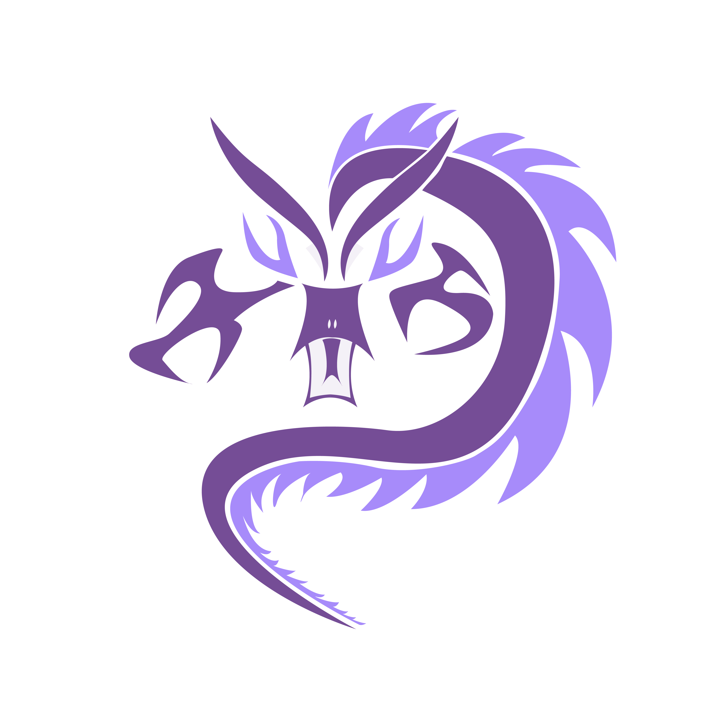
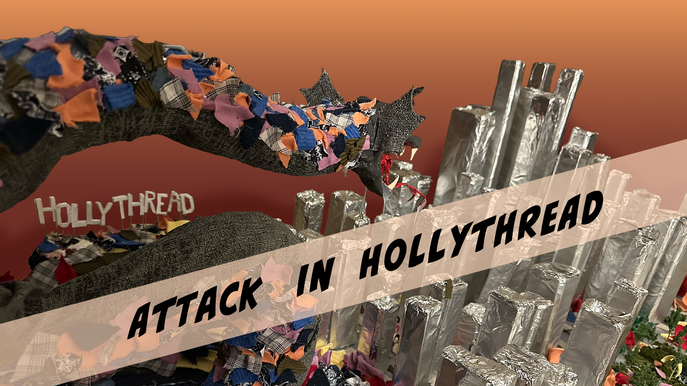
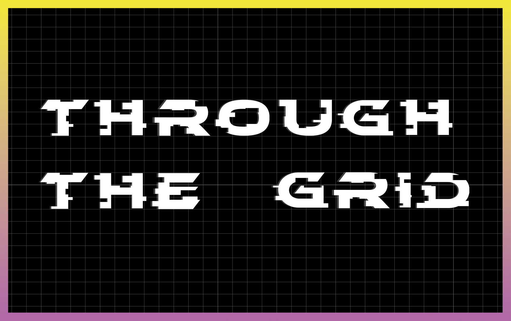
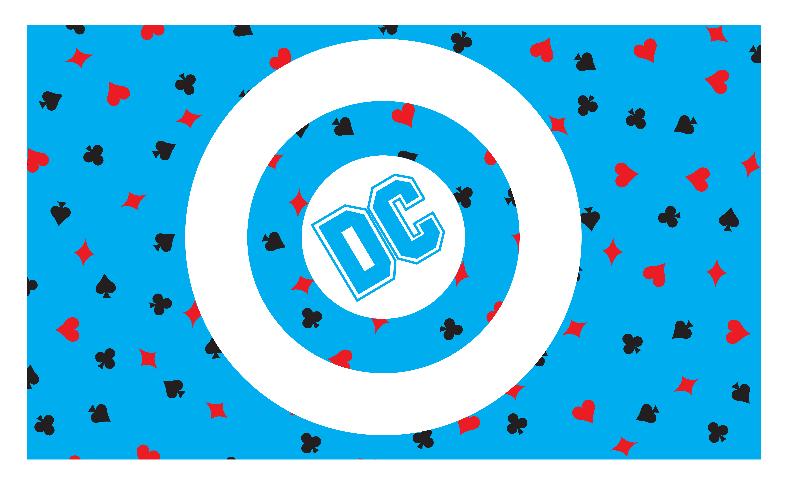
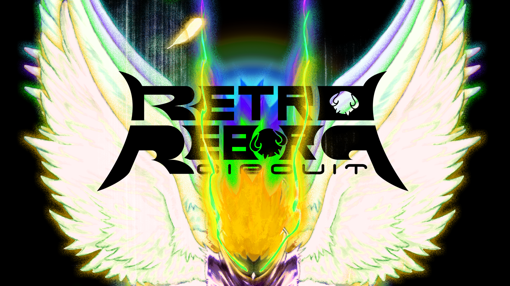

PORTFOLIO ARCHIVE // 2026
NICOLE
COLLINS

Graphic designer creating visual systems,
experiences, and worlds through bold
storytelling.
01
SENIOR THESIS / ENVIRONMENTAL STORYTELLING
ATTACK IN
HOLLYTHREAD
RESERVOIR
A fictional aquatic ecosystem exploring
environmental storytelling through graphic
design, physical construction, and narrative.
FIELD REPORT →
ARCHIVE // 001

02
SOCIAL COMMENTARY / GAME DESIGN
BEHIND THE
CROSSHAIRS
A visual exploration of how first-person
shooter games can desensitize players to
the realities of war and violence.
ACCESS FILES →
ARCHIVE // 002

03
BRANDING / VISUAL IDENTITY
BOOM!
STUDIOS
A visual identity exploration for a
comic and visual storytelling brand,
built around a bold and contemporary system.
BROWSE COLLECTION →
04
WAYFINDING / INFORMATION DESIGN
THROUGH
THE GRID
A digital wayfinding system that transforms
complex route information into a structured,
interactive visual experience.
ENTER GRID →
ARCHIVE // 004

05
CHARACTER DESIGN / CARD SYSTEM
DECK OF
ARCHETYPES
A character-driven card system exploring
personality, visual identity, and archetypal
storytelling through an illustrated deck.
SHUFFLE THROUGH →
ARCHIVE // 005

06
BRANDING / APPAREL / ART DIRECTION
RETRO
REBORN
A visual identity and apparel exploration
combining nostalgic aesthetics with
contemporary graphic design.
KEEP SCROLLING →
ARCHIVE // 006
